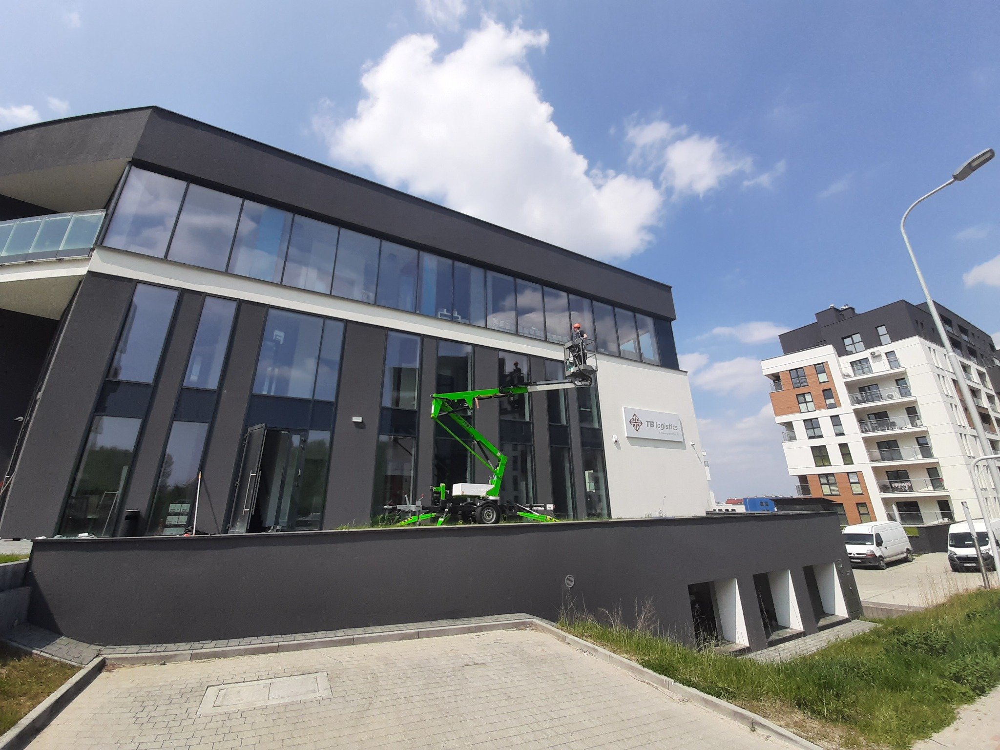
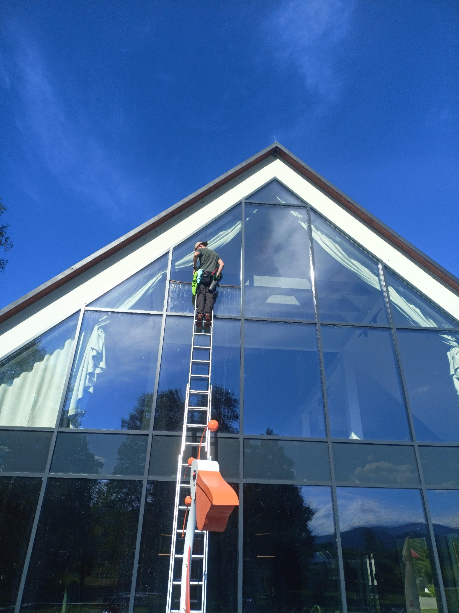
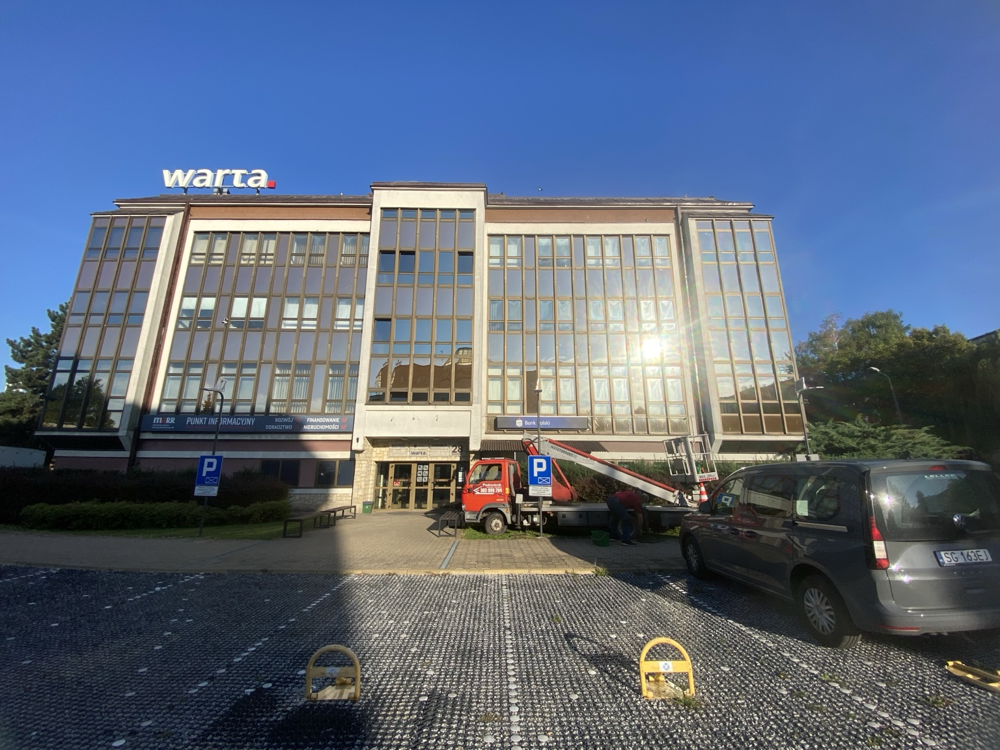
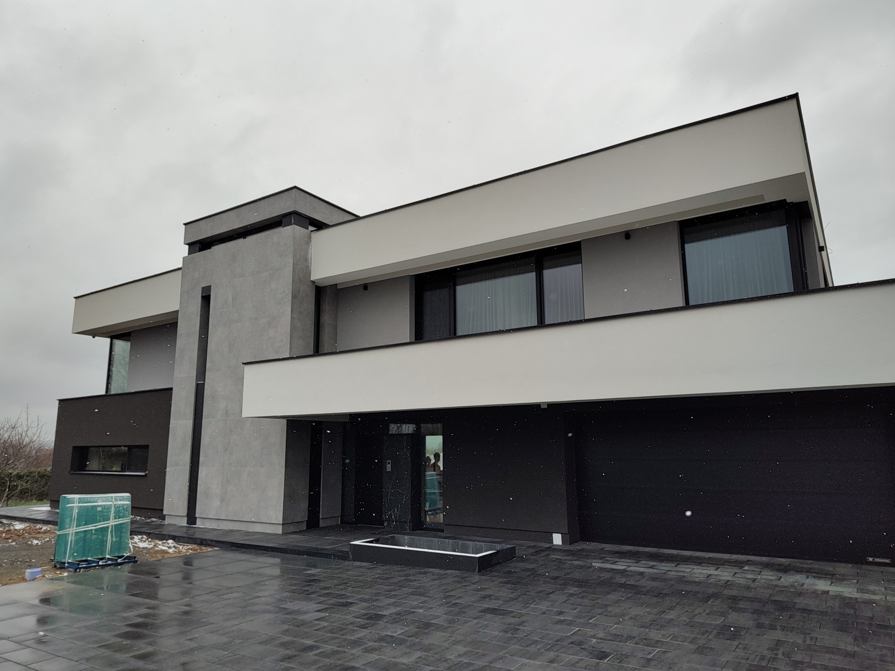
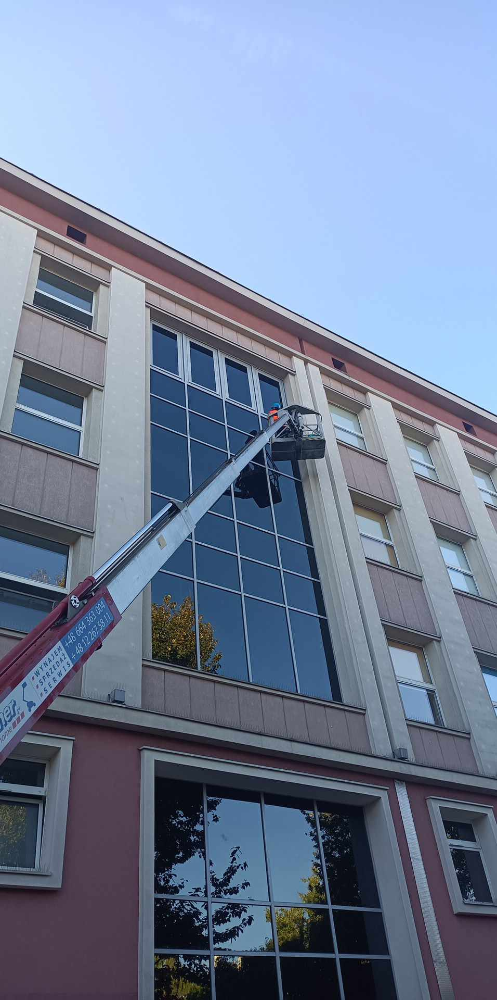

Mycie okien
Domy, biura, witryny oraz duże przeszklenia. Mycie okien Krosno →
PRYZMAT GLASS • PROFESJONALNE USŁUGI
Mycie okien, elewacji i kostki brukowej oraz kompleksowe sprzątanie dla firm i klientów prywatnych.
Krosno • Jasło • Gorlice • Grybów • Nowy SączPRYZMAT GLASS
Realizujemy prace dla klientów prywatnych i firm. Zakres dobieramy do obiektu, dostępu i oczekiwanego efektu — od regularnego sprzątania po mycie dużych powierzchni szklanych.
USŁUGI
Domy, biura, witryny oraz duże przeszklenia. Mycie okien Krosno →
Elewacje tradycyjne i szklane, także wymagające dostępu na wysokości.
Podjazdy, chodniki, tarasy i powierzchnie wokół budynków.
Zabezpieczenie nawierzchni po dokładnym oczyszczeniu.
Porządkowanie obiektów po budowie, wykończeniu i remoncie.
Regularna obsługa oraz sprzątanie po budowie i remoncie.
REALIZACJE
Wybrane realizacje Pryzmat Glass — od domów po obiekty komercyjne i prace na wysokości.





.jpg)
DLA FIRM I DOMÓW
Witryny, biura, przeszklenia, elewacje oraz cykliczna obsługa.
Okna, elewacje, kostka brukowa oraz regularne sprzątanie domu.
OBSZAR DZIAŁANIA
Obsługujemy zlecenia na wskazanym obszarze i w jego okolicach. Przy większych realizacjach zakres dojazdu ustalamy indywidualnie.
BEZPŁATNA WYCENA
Opisz obiekt i zakres prac. W przypadku większych realizacji możesz przygotować zdjęcia — ułatwią wstępną ocenę zlecenia.